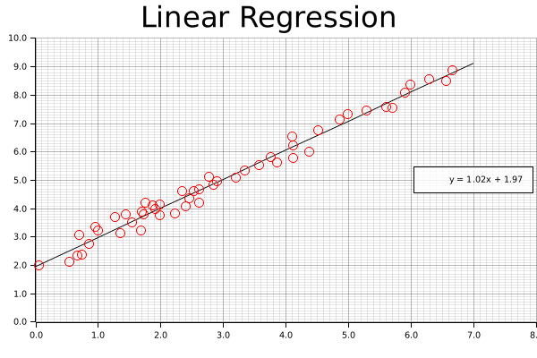

Linear Regression
Now that we've gotten some clustering under our belt, let's take a look at one of the other common data science tasks: linear regression on two-dimensional data. This example includes code for both calculating the linear equation using linfa, as well as code for plotting both the data and line on a single graph using the plotters library.
Per usual, we'll create some data using one of our built-in functions. This simply creates an Array2<f64> with two columns, one of which will be our x-axis and the other our y-axis. We're generating this artificially, but remember, we could get this from a real data source like processing a CSV file or reading in values from a sensor.
#![allow(unused)] fn main() { let array: Array2<f64> = linfa_book::create_curve(1.0, 1.0, 0.0, 50, [0.0, 7.0]); }
Now that we have the initial data, let's break that down into something that we can use for our regression; a data array and a target array. Fortunately, this is pretty simple with the slice() and column() functions provided by ndarray. We're also going to want to grab the maximum values for our arrays (and round them up to the nearest integer using the ceil() function) to be used for plotting those values a little bit later.
#![allow(unused)] fn main() { // Converting from an array to a Linfa Dataset can be the trickiest part of this process let (data, targets) = ( array.slice(s![.., 0..1]).to_owned(), array.column(1).to_owned(), ); let x_max = data.max().unwrap().ceil(); let y_max = targets.max().unwrap().ceil(); }
Once the data is formatted, we'll be able to nicely add it into the linfa-native Dataset format, along with the appropriate feature names. If you're running into funky error related to array shapes in your code, this section and the step before (where we create our data and target data structures) are ones you should double-check; dynamically-shaped arrays as found in most scientific computing libraries, Rust-based or not, can be tricky.
In fact, as you may have experienced yourself, it's very common that the pre-processing steps of many data science problems (filtering, formatting, distributing, etc.) are actually the most complicated and often where a little bit of additional effort can save you a lot of trouble down the road.
#![allow(unused)] fn main() { let dataset = Dataset::new(data, targets).with_feature_names(vec!["x", "y"]); }
However, now we have our data formatted properly and in the Dataset format, actually running the regression is pretty simple; we only need to create our LinearRegression object and fit it to the dataset.
#![allow(unused)] fn main() { let lin_reg = LinearRegression::new(); let model = lin_reg.fit(&dataset).unwrap(); }
We're going to leave out a little bit of the boilerplate (check the repository for the full example code), but you'll notice that when we set up our chart context, we'll use the rounded maximum values in both the data and target arrays to set our maximum chart range (as mentioned earlier).
#![allow(unused)] fn main() { let mut ctx = ChartBuilder::on(&root_area) .set_label_area_size(LabelAreaPosition::Left, 40) .set_label_area_size(LabelAreaPosition::Bottom, 40) .caption("Legend", ("sans-serif", 40)) .caption("Linear Regression", ("sans-serif", 40)) .build_cartesian_2d(0.0..x_max + 1.0, 0.0..y_max + 1.0) .unwrap(); }
Now that the chart is good to go, we'll start off by drawing our best fit line using the linear equation we derived above. We can't just supply the equation and let the plotting figure it out; instead, what we'll do it create series of points that exactly match this equation at regular intervals, and connect those with a smooth, continuous line. If this seems clunky, just remember: we have a nice, smooth solution this time around, but that might not always be the case. In the future, we might want more complicated polynomial, or even a discontinuous function. This approach (smoothly connecting an arbitrary set of points) is applicable to a wide variety of potential applications.
Once we add our line, we'll also want a nice label, with a set level of precision; this will be added to the legend once our chart is complete.
#![allow(unused)] fn main() { let mut line_points = Vec::with_capacity(2); for i in (0..8i32).step_by(1) { line_points.push((i as f64, (i as f64 * model.params()[0]) + model.intercept())); } // We can configure the rounded precision of our result here let precision = 2; let label = format!( "y = {:.2$}x + {:.2}", model.params()[0], model.intercept(), precision ); ctx.draw_series(LineSeries::new(line_points, &BLACK)) .unwrap() .label(&label); }
Now that the line is present, we can add our points; this should look very familiar, as we're functionally doing something similar to the clustering examples we've already put together.
#![allow(unused)] fn main() { let num_points = array.shape()[0]; let mut points = Vec::with_capacity(num_points); for i in 0..array.shape()[0] { let point = (array[[i, 0]], array[[i, 1]]); let circle = Circle::new(point, 5, &RED); points.push(circle); } ctx.draw_series(points).unwrap(); }
Finally, we'll configure the labels that we'll assigned to each of the series that we've drawn on the chart.
#![allow(unused)] fn main() { ctx.configure_series_labels() .border_style(&BLACK) .background_style(&WHITE.mix(0.8)) .draw() .unwrap(); }
And we're done (ooooh, ahhhh, pretty)!
